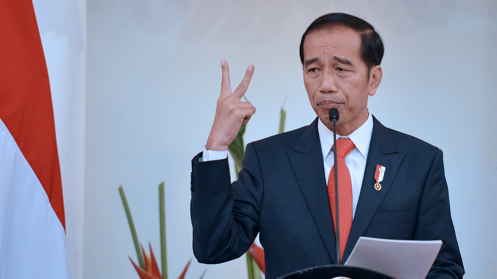

| Nama | Foto | Kelebihan | Kekurangan |
|---|---|---|---|
| Joko Widodo |  |
Presiden Joko Widodo berhasil menjaga stabilitas ekonomi Indonesia meskipun menghadapi tantangan global. |
Isu Korupsi dan Nepotisme
Meskipun ada upaya reformasi birokrasi,isu korupsi dan Nepotisme
masih menjadi tantangan yang di alami oleh pemerintahan Presiden Joko Widodo |